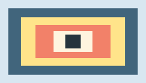

Page Siege test range
Load the extension, then click its toolbar icon. Jump onto the labels and the image. Shoot each target, scroll, collect a crate, and switch the extension off to restore the page.
High text platform
Middle text platform
Low text platform

Scroll test
This paragraph and the shapes below should become new platforms when scrolled into view.
Blockquote landing spot
Colored tile